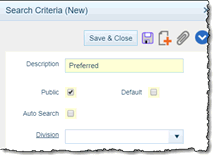
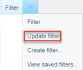

GL Accounts Search
The GL Accounts Search List Window gives you the ability to locate and access records created with the GL ACCOUNT MAINTENANCE APPLICATION as well as create new records.
For information about using this and all other search list windows, refer to the SEARCH LIST WINDOW topics.
BASIC SEARCH for Records
Enter criteria in one or more of the fields above the columns at the top of the window if you're looking for a specific record or group of records and then hit the Enter key or click the Search button. The system will limit the results of the search to the records that match the values entered in the fields above each column (if you’ve entered anything at all).
If you want to locate all existing records, press the Enter key or click the Search Button without entering any criteria. You can clear previously-entered criteria by clicking the Clear button at the top right—hand corner of the window.
NOTE
Search criteria has been added to all search lists linked to maintenance records that have the ability to add Additional Contacts lists. These additions make it possible to search for records based on the people in a record’s Additional Contact list.
This specification has only added the ability to search by Additional Contact Lists. It does not include adding the data to the results to search lists.
ADVANCED SEARCH for Records
For additional search criteria and to search by record creation dates, click the Filter button found at the top left of this window. A new Criteria window will open in which you can define your search criteria. Click the Search button in this window when ready to perform your search.
OPEN/EDIT Existing Records
After locating the desired record row, click the hyperlink in the ID field.
CREATE New Records
You can create new records from this window by clicking the Plus icon in the navigation bar at the top right corner of this window.
SAVED SEARCHES NOTE
If you commonly use the same search criteria to locate records, you may want to save a particular set of values to the Filter list.
- Enter the desired criteria in the search fields above the columns in this window.
- Click the dropdown menu attached to the Filter button at the top of this window. From the dropdown menu, select ‘Create Filter’. You will be asked to choose a layout to use with the document. Choose a layout and click the ‘OK’ button.
- The ‘Search Criteria (New)’ window will appear. Enter a description of the filter that will make it easy to determine the intended outcome (e.g.’Preferred’).
- The Public field determines if everyone has access to this saved search or only you do. Activate the checkbox if you want others to be able to use the search.
- The Default field determines whether the saved search will be your default search. You can override the default if necessary.
- The Auto Search field instructs the system to perform this search immediately when this search window is opened.
- If you have checked the Public field, the Division field determines which Division will have access to this saved search. If this field is left blank, the saved search will be available Globally.

- Click the Save & Close button.
- When you want to use this saved search, click the dropdown menu next to the ‘Filter’ button and select a saved search from the drop-down list. The search criteria assigned that saved search will automatically fill the appropriate fields.
NOTE
You may modify the currently selected saved search by selecting the saved search as noted above, then adding additional search criterial in the search fields above the window. Once you have added your additional criteria, click the dropdown menu next to the ‘Filter’ button and select ‘Update Filter’.

The system will change the saved filter to match the currently-entered criteria. The system will notify you when the update is complete via a message popup in the upper right-hand corner of your screen.
You can click the View Saved Searches button to manage other saved searches. The Cancel button cancels the process and the Help button accesses this Help file.
LAYOUT NOTE
Saved searches are stored by the system at the layout level, not the document level. So, if you save a search for one layout, it will not be available for any other layout.